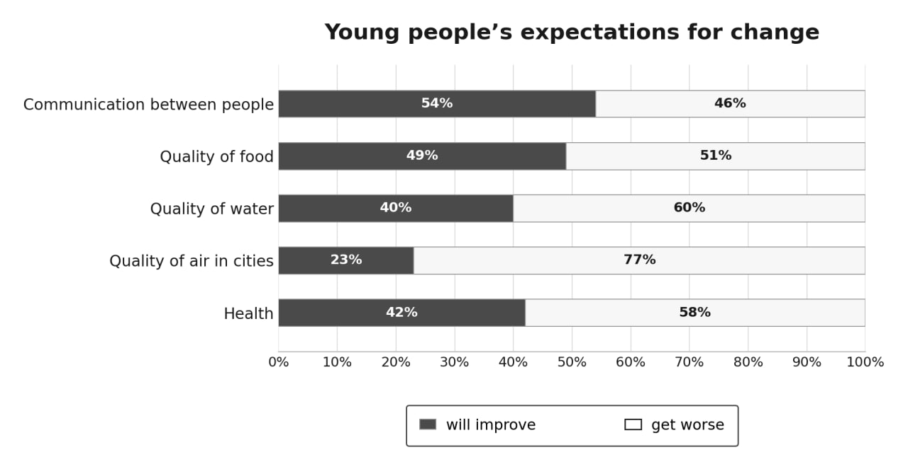

Writing
Two tasks in 60 minutes. Your writing is saved on this device as you type.
Writing Task 1
The chart below shows the results of a European survey into young people’s expectations for change in five different areas of life in the next 20 years. They were asked if they thought things would improve or get worse.
Summarise the information by selecting and reporting the main features, and make comparisons where relevant.

0 words
Free AI estimate of your band for each criterion, with corrections. It is not an official IELTS score. Your answer is sent to an AI to be marked and is not saved by Englisity.
Writing Task 2
Nowadays, many people use the Internet to get medical advice instead of going to see a doctor. Why is this? Do you think it is a positive or negative development?
Give reasons for your answer and include any relevant examples from your own knowledge or experience.
0 words
Free AI estimate of your band for each criterion, with corrections. It is not an official IELTS score. Your answer is sent to an AI to be marked and is not saved by Englisity.